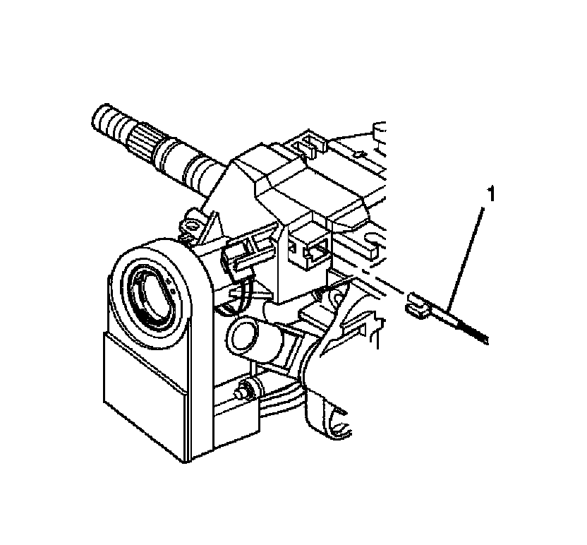
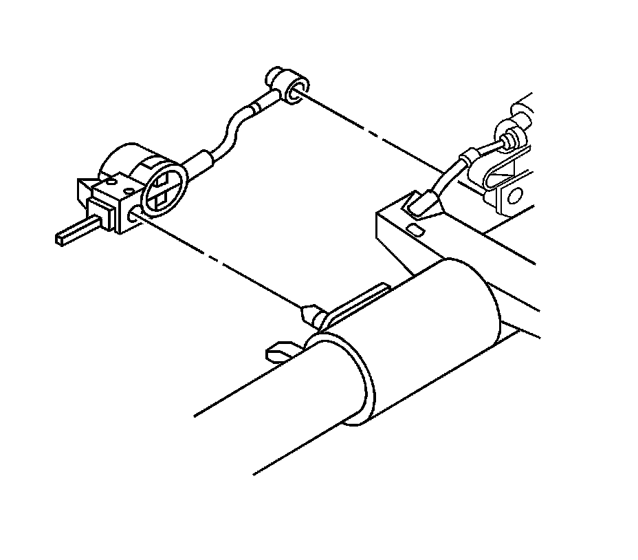
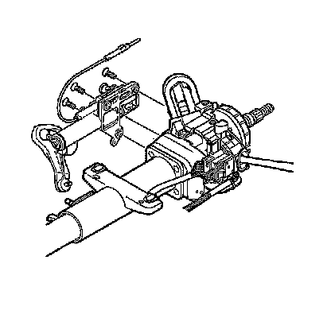

Linear Shift Assembly Replacement
Linear Shift Assembly Replacement
Removal Procedure

Caution: Refer to SIR Caution.
1. Disable the supplemental inflatable restraint (SIR) system. Refer to SIR Disabling and Enabling.
2. Remove the steering column.
3. Remove the shift lever.
4. Disconnect the park lock cable assembly (1).
5. The steering column lock cylinder set should be in the OFF-LOCK position.
6. Insert a small screwdriver into the slot on the ignition lock cylinder case and push against the locking tab to remove.

Notice: Do not use excessive force when removing the automatic transmission shift lock control from the steering column. Using excessive force may cause damage to the automatic transmission shift lock control and/or the steering column.
7. Use a small screwdriver to pry the automatic transmission shift lock control from the linear shift assembly.

8. Remove the 3 TORX(R) screws from the linear shift assembly.
9. Remove the linear shift assembly from the steering column support assembly.
Installation Procedure
1. Install the linear shift assembly onto the steering column support assembly.
Notice: Refer to Fastener Notice.
2. Secure the linear shift assembly to the steering column assembly with the 3 flat head tapping screws.
Move the linear shift assembly out of the PARK position to install the lower socket tapping screw.
Tighten the 3 TORX(R) screws to 10 N.m (89 lb in).
3. Install the automatic transmission shift lock control to the linear shift assembly.
4. Connect the park lock cable assembly (1) to the ignition lock cylinder case in the following way:
1. Place the steering column lock cylinder set into the OFF position.
2. Place the shift lever clevis into the Park position.
3. Press the locking tab on the end of the park lock cable assembly (1) into the slot in the ignition lock cylinder case.
5. Install the shift lever.
6. Install the steering column.
7. Enable the SIR system. Refer to SIR Disabling and Enabling.